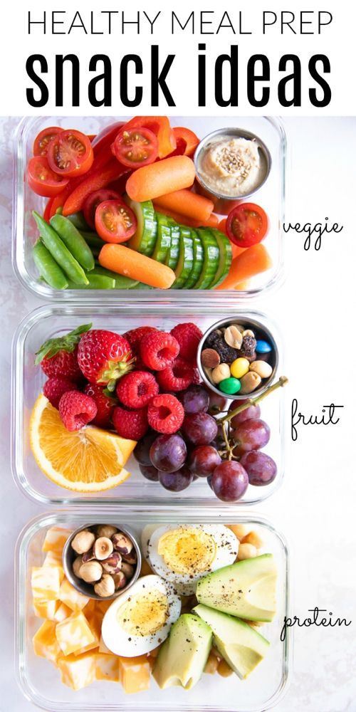
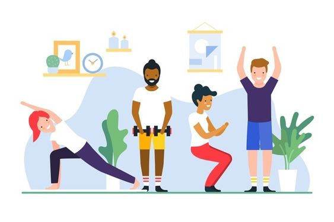
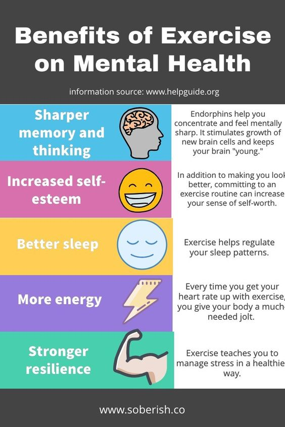
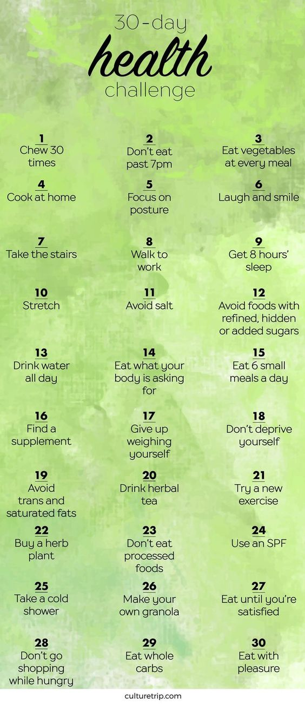

WHAT IS HEALTHY LIVING?
"Healthy living" to most people means both physical and mental health are in balance or functioning well together in a person.
In many instances, physical and mental health are closely linked, so that a change (good or bad) in one directly affects the other.
Consequently, some of the tips will include suggestions for emotional and mental "healthy living."
HEALTHY EATING (DIET AND NUTRITION)

All humans have to eat food for growth and maintenance of a healthy body, but we humans have different nutrition requirements as
infants, children (kids), teenagers, young adults, adults, and seniors. For example, infants may require feeding every 4 hours until they
gradually age and begin to take in more solid foods. Eventually they develop into the more normal pattern of eating three times per day
as young kids. However, as most parents know, kids, teenagers, and young adults often snack between meals. Snacking is often not limited
to these age groups because adults and seniors often do the same.
TIPS:
Eat three healthy meals a day (breakfast, lunch, and dinner); it is important to remember that dinner does not have to be the largest meal.
The bulk of food consumption should consist of healthy foods, such as fruits, vegetables, whole grains, and fat-free or low-fat milk products.
Incorporate lean meats, poultry, fish, beans, eggs, and nuts (with emphasis on beans and nuts) into a healthy diet.
Control portion sizes; eat the smallest portion that can satisfy hunger and then stop eating.
Avoid eating a large meal before sleeping to decrease gastroesophageal reflux and weight gain.
PHYSICAL ACTIVITY AND EXERCISE

Physical activity and exercise is a major contributor to a healthy lifestyle; people are made to use their bodies, and disuse
leads to unhealthy living. Unhealthy living may manifest itself in obesity, weakness, lack of endurance, and overall poor health that
may foster disease development.
TIPS:
Regular fitness can help chronic arthritis sufferers improve their capacity to perform daily activities such as driving, climbing stairs, and opening jars.
Regular exercise can help control body weight and in some people cause loss of fat.
Regular exercise can help increase self-esteem and self-confidence, decrease stress and anxiety, enhance mood, and improve general mental health.
Thirty minutes of modest exercise (walking is OK) at least 3 to 5 days a week is recommended, but the greatest health benefits come from exercising most days of the week.
Start slowly and progress gradually to avoid injury or excessive soreness or fatigue. Over time, build up to 30 to 60 minutes of moderate to vigorous exercise every day.
People are never too old to start exercising. Even frail, elderly individuals (70-90 years of age) can improve their strength and balance with exercise.
Children need exercise; play outside of the home is a good beginning.
Almost any type of exercise (resistance, water aerobics, walking, swimming, weights, yoga, and many others) is helpful for everybody.
MENTAL HEALTH

Healthy living involves more than physical health, it also includes emotional or mental health. The following are some ways people
can support their mental health and well-being.
TIPS:
Get enough sleep daily; the CDC recommends the following by age group (naps inclusive); 12-18 hours from birth to 2 months, 14-15 hours from 3-11 months of age, 12-18 hours for 1-3 years of age, 11-13 hours for 3-5 years of age, 10-11 hours for 5-10 years of age, 8.5-9.5 hours for 10-17 years of age and those 18 and above need 7-9 hours of sleep. Elderly people need about 7-9 hours but do not sleep as deeply and may awaken at night or wake early, so naps (like kids need) allow them to accumulate the total of 7-9 hours of sleep.
Plan to spend some time talking with other people about different subjects.
Try to make some leisure time to do some things that interest you every week (hobby, sport).
Let yourself be pleased with your achievements, both big and small (develop contentment).
Have a network of friends; those with strong social support systems lead healthier lives.
Seek help and advice early if you feel depressed, have suicidal thoughts, or consider harming yourself or others.
People taking medicine for mental health problems should not stop taking these medications, no matter how "well" they feel,
until they have discussed their situation with their prescribing doctor(s).
HEALTHY LIFESTYLE CHALLENGE: 30 DAYS OF HEALTHY HABITS
Making a few simple changes is the first step in creating a healthier lifestyle for yourself. We’ve put together a healthy lifestyle
challenge with seven boosts to help you achieve mental, physical, and emotional health.
